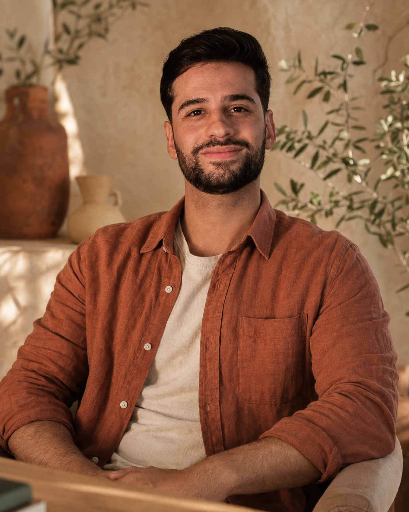

1
Eu entendo meu ponto de partida
Mapeio rotina, preferências, exames, fome, emoções e tentativas anteriores — sem julgamento.
Resultado: clareza em vez de culpa.Eu quero cuidar do meu corpo sem transformar cada refeição em uma prova — e sem carregar culpa quando a vida real acontece.
Quero conversar no WhatsApp ↗
Depois de acompanhar tantas mulheres inteligentes se culpando por não caberem em planos impossíveis, eu entendi: o problema nunca foi saber o que comer.
Foi por isso que desenvolvi o [Nome do Método] — uma abordagem que une estratégia nutricional, rotina possível e autonomia. Eu te ajudo a reconhecer padrões, organizar escolhas e emagrecer sem colocar sua vida em pausa.
“Quando a alimentação deixa de ser castigo, o cuidado finalmente consegue durar.”
Quero falar com você no WhatsApp ↗Eu não falhei. Eu só tentei sustentar regras rígidas demais por tempo demais. Meu corpo não precisa de mais punição — precisa de uma estratégia que converse com a minha vida.
“Eu sabia tudo sobre dieta. O que eu não sabia era como comer sem medo de estragar tudo.”— relato de uma paciente
Eu avanço no meu ritmo, com clareza sobre o próximo passo e sem precisar acertar tudo de uma vez.
Mapeio rotina, preferências, exames, fome, emoções e tentativas anteriores — sem julgamento.
Resultado: clareza em vez de culpa.Organizo refeições e ambiente com escolhas que fazem sentido para meus dias comuns.
Resultado: consistência sem rigidez.Trabalho festas, viagens, ansiedade e imprevistos sem cair no “já que comi, perdi tudo”.
Resultado: liberdade com direção.Ajusto estratégias, reconheço sinais e tomo decisões sem depender para sempre de um cardápio.
Resultado: um emagrecimento que se sustenta.“Pela primeira vez, viajei, aproveitei e voltei sem sentir que precisava pagar pelo que comi.”Luiza, 38 anos
“Meu maior resultado foi parar de pensar em comida o dia inteiro. O peso foi consequência.”Carolina, 43 anos
“Hoje eu reconheço fome, vontade e ansiedade. Não preciso mais tratar tudo como fracasso.”Ana Paula, 35 anos
“Eu não esperava aprender tanto sobre mim. Consigo escolher sem depender de lista proibida.”Mariana, 47 anos
R$ 390 / encontro
R$ 1.290 ou 3× R$ 430
R$ 2.280 ou 6× R$ 380
Toque em uma pergunta. Eu respondo por aqui.
Uma conversa simples pode ser o começo. Clique abaixo para falar diretamente comigo e descobrir qual formato faz sentido para você.
Sem compromisso. Você será direcionada para uma conversa individual no WhatsApp.